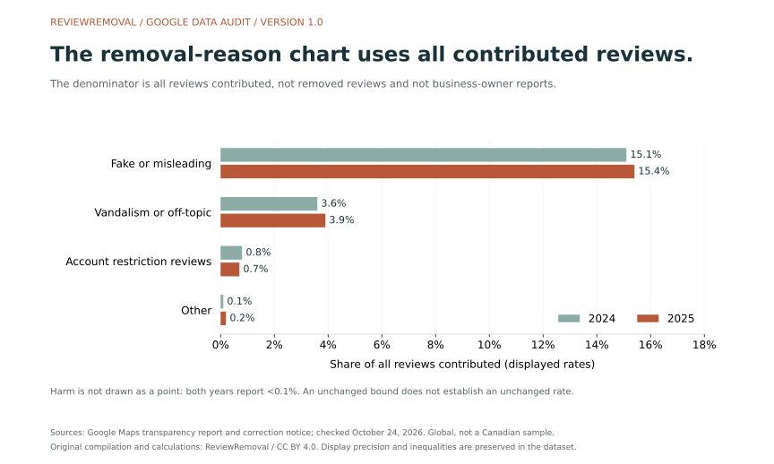
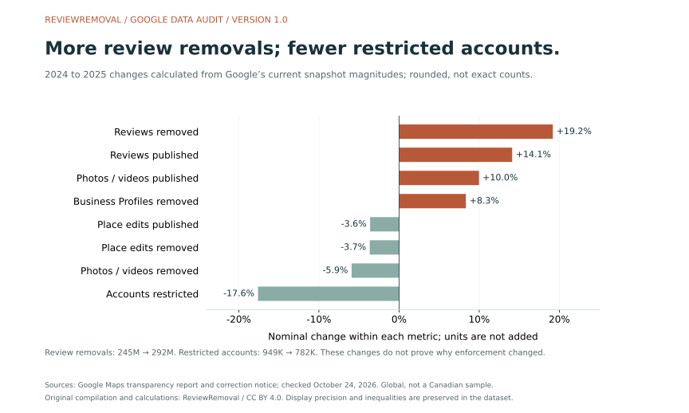
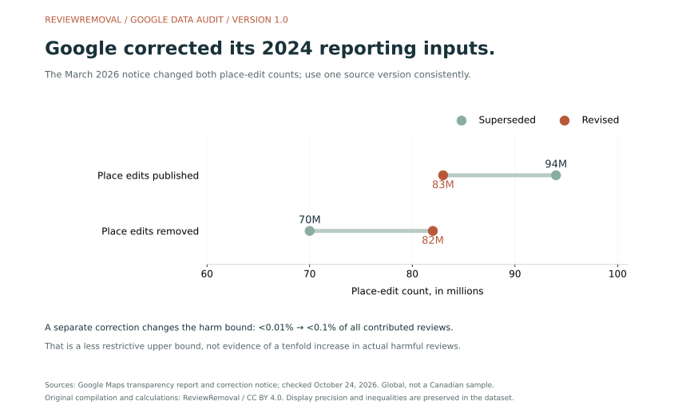

On this page
The most useful detail in a review-removal statistic is often the part left out of the headline: the denominator. Google’s 2025 chart puts fake-or-misleading removals at 15.4% of all reviews contributed. It does not say that only 15.4% of removed reviews were fake, or that a business has a 15.4% chance of winning a report.
We built a new dataset from Google’s 2024 and 2025 transparency displays, its published correction notice and two company announcements. The result is 34 source records and 13 labelled comparisons, with three original graphs, preserved inequalities and a record of which version each figure comes from. Our contribution is the structured compilation and analysis; Google produced the underlying disclosures.
Five findings worth taking beyond the headline
- The base matters. The fake-or-misleading rate changes from 15.1% to 15.4%, a nominal increase of 0.3 percentage points in the displayed rates. Both use all contributed reviews.
- Review and account measures move in opposite directions. Review-removal displays rise about 19.2%, while restricted-account displays fall about 17.6%. The aggregates do not explain the cause.
- 245M is a different disclosure from “more than 240 million.” The current 2024 snapshot and the earlier announcement should not silently share the same numeric field.
- A reporting correction can reverse a comparison. Google revised published place edits from 94M to 83M, and removed place edits from 70M to 82M, for 2024.
- An unchanged bound is not an unchanged rate. Both years now show harm at <0.1%. That does not reveal its exact value, volume or direction of change.
The underlying evidence is in Google’s enforcement exhibit, contribution exhibit and March 2026 correction notice. All changes above are our arithmetic on the displayed values, not new measurements of Google’s internal records.
What does the 15.4% figure actually measure?
The caption under Google’s removal-reason chart specifies percentage of total reviews contributed
. That is the reference population for each displayed reason rate. A reader who substitutes “all removed reviews” changes the meaning of the statistic. Check the chart and caption
For a scale illustration, 15.4% corresponds to 1,540 per 10,000 contributed reviews. It does not mean 1,540 successful business-owner reports. We have not observed a 10,000-review cohort; we have rescaled a published percentage so its base is easier to understand.
Likewise, 3.9% for vandalism or off-topic content corresponds to 390 per illustrative 10,000 contributions. The account-restriction category is a rate for affected reviews, while the separate account total counts accounts. Treating those fields as the same unit would make a second error.
A useful citation keeps four things together
State the activity year, the measured outcome, the denominator and the source version. For example: “Google’s current 2025 chart reports fake-or-misleading removals at 15.4% of all contributed reviews, checked October 24, 2026.” Do not turn that sentence into a case-success prediction.



How the five reason rates changed
| Reason | 2024 | 2025 | Displayed-rate change | 2025 per 10,000 contributed |
|---|---|---|---|---|
| Fake or misleading | 15.1% | 15.4% | +0.3 percentage points | 1,540 |
| Vandalism or off-topic | 3.6% | 3.9% | +0.3 percentage points | 390 |
| Account restrictions | 0.8% | 0.7% | -0.1 percentage points | 70 |
| Harm | <0.1% | <0.1% | Unknown from the bounds | Fewer than 10 |
| Other | 0.1% | 0.2% | +0.1 percentage points | 20 |
Scroll the table sideways to see every column.
The relative change in the fake-or-misleading display is approximately 2.0%: (15.4 − 15.1) ÷ 15.1 × 100. Its percentage-point change is 0.3. Those are different descriptions of the same pair of displays. Neither measures a change in the prevalence of every fake review, including content that was never detected.
For harm, <0.1% translates to fewer than 10 per illustrative 10,000 contributions. Replacing that with zero would erase information. Replacing it with exactly 0.1% would invent a point estimate. The actual rate could move up or down while remaining below the same limit.
We do not report an exact all-reason total by adding rounded chart values. Nor do we multiply a reason rate by an estimated submission pool to manufacture an exact count of removed fake reviews. The source does not provide that unrounded calculation.
Why review removals and account restrictions tell different stories
The current snapshot shows 245M removed reviews for 2024 and 292M for 2025. It separately shows restricted accounts falling from 949K to 782K. The table below keeps eight measures distinct.
| Metric | 2024 display | 2025 display | Nominal change |
|---|---|---|---|
| Reviews published | 999M | 1.14B | +14.1% |
| Reviews blocked or removed | 245M | 292M | +19.2% |
| Photos and videos published | 752M | 827M | +10.0% |
| Photos and videos blocked or removed | 169M | 159M | -5.9% |
| Place edits published | 83M | 80M | -3.6% |
| Place edits blocked or removed | 82M | 79M | -3.7% |
| Contributor accounts restricted | 949K | 782K | -17.6% |
| Fake or fraudulent Business Profiles blocked or removed | 12M | 13M | +8.3% |
Scroll the table sideways to see every column.



This pattern does not establish that Google stopped restricting repeat offenders, that it caught more unique bad actors or that any particular detection system caused the difference. The data contain no account-to-review matching table and no experiment isolating a cause. They show that a single “enforcement is up” headline misses different movements across the exhibits.
Why we keep 245M separate from the >240M announcement
Ian Leader’s April 7, 2025 Google article reports more than 240 million policy-violating reviews blocked or removed for 2024. Bibek Samantaray’s April 16, 2026 article reports over 292 million for 2025. These are threshold statements. The current transparency exhibit displays 245M and 292M.
There is no contradiction in a 245M display coexisting with an earlier “more than 240 million” statement. The error would be to store both as the exact integer 240,000,000, then present a precise year-over-year growth rate. Our dataset preserves a separate source_kind and operator for each announcement threshold.
The roughly 19.2% change used here is explicitly (292 − 245) ÷ 245 × 100, calculated between current rounded snapshot magnitudes. It is not asserted as the exact increase in enforcement events. The source pages do not publish the underlying unrounded counts or their display-rounding algorithm.
The March 2026 corrections change the baseline
Google’s visible-changes notice identifies an earlier reporting error affecting 2024 place-edit data, and an error in the review-reason chart. We preserve the old and new values as different records, rather than deleting the superseded figures.
| 2024 field | Superseded | Revised | Interpretation |
|---|---|---|---|
| Place edits published | 94M | 83M | An 11M reduction in the displayed magnitude |
| Place edits removed | 70M | 82M | A 12M increase in the displayed magnitude |
| Harm reason rate | <0.01% | <0.1% | A less restrictive upper bound; actual change is not established |
Scroll the table sideways to see every column.



A concrete example shows the consequence: comparing 2025’s 79M removed place edits with the superseded 70M suggests a nominal increase of 12.9%. Comparing it with the corrected 82M gives a nominal decrease of 3.7%. The reporting version can reverse the direction of the comparison. These are arithmetic examples using rounded displays, not review-removal success rates.
The revised harm limit is ten times the earlier limit. That describes the ceiling written in the report, not ten times as much actual harmful content. No actual harm-rate change can be recovered from those two upper bounds alone.
What a separate deletion dataset can—and cannot—add
Localo’s May 2026 review-velocity study describes 335,520 deleted reviews across 22,292 Business Profiles, tracked from November 2023 to January 2026. Its methodology gives researchers another useful population to examine, but it is a different population from Google’s worldwide annual contribution exhibits.
A dataset selected around deleted reviews can describe observed deletions in its tracked sample. That selection does not, by itself, supply the risk that any newly posted review will be deleted. An outcome probability also needs the relevant starting population, reviews that remain visible and a defined follow-up period. We therefore cite the study as context and do not merge its counts into our Google source table.
The same discipline applies to an agency’s case study. A set of successfully removed reviews is useful evidence about those cases; it is not a success rate until the full eligible request cohort and outcome rules are known.
How Canadian businesses can use the findings
These are global disclosures, not a Canadian sample. They do not give Toronto, Ontario, Montréal, Calgary or Vancouver removal probabilities. A business can still use the research to evaluate how a provider describes evidence and reports outcomes.
- Ask for the population behind a rate. Is it every review contribution, every reported review or a provider’s accepted cases?
- Keep separate review records. A multi-location business should attach the location, listing and exact review URL to each case.
- Keep the decision and visibility separate. An absent review is an observation; save the platform decision when available.
- Use a policy-specific next step. Our Google evidence checker and report and appeal guide organize that work.
Google’s reporting guidance addresses policy-violating reviews and available appeals. A direct demand for money to remove negative reviews has its own merchant extortion reporting route. The practical next step comes from the specific facts, not the size of a global enforcement total.
For managed assistance, let ReviewRemoval handle the assessment and reporting work. The published rate is CAD $50 upfront per review and $125 for each review removed. The pricing guide explains mixed outcomes and per-review fees.
Questions about Google review removal statistics
Does 15.4% mean that only 15.4% of removed reviews were fake?
No. The chart uses all contributed reviews as its denominator. It does not directly publish that share of the removed-review subset.
Does the harm category being small mean a threat will not be removed?
No. An aggregate contribution rate is not the probability that a specific policy-violating review will be removed. The case facts, evidence and relevant reporting route still matter.
Is 292M the number of business-owner requests that succeeded?
No. The exhibit concerns content blocked or removed. It does not provide a merchant-report cohort or a count of successful paid removal cases.
Does the account decline explain the review increase?
No causal explanation follows from the two aggregates. Without linked observations, the difference cannot establish a change in the number of reviews per restricted account.
Methods, reproducibility and limits
- Select and check the exhibits. Read the 2024 and 2025 overview and enforcement pages, including selected-year state and chart captions. Retain the source URL and a SHA-256 fingerprint of the captured body text.
- Extract the current displays. Record eight count metrics and five reason rates per year, giving 26 current-snapshot records.
- Preserve source versions. Add six correction records—old and revised values for three fields—and two separately labelled announcement thresholds. Total: 34 source records.
- Calculate within compatible pairs. Produce eight nominal count comparisons and five reason-rate comparisons. Do not combine different units, replace bounds with point estimates or label the harm direction as unchanged.
- Keep illustrations explicit. Rescale reason displays to a hypothetical 10,000 contributions. These are explanatory conversions, not review-level observations.
- Publish the audit. Check source displays against the curated input, CSV/JSON parity, source-kind totals, calculations and preserved inequalities. Make the builder and plotting script downloadable.
Google’s report FAQ says contribution status is captured as of January 31 of the following year; account actions cover actions taken during the selected year. Current pages may include later reporting corrections. Different timing and units limit comparisons.
This is secondary analysis of company disclosures. We did not inspect internal moderation records, independently verify detection accuracy, survey Canadian businesses or measure the proportion of all fake reviews that escape detection. Source displays are rounded, reason rates have limited precision, and this audit supplies no confidence intervals.
Commercial interest: ReviewRemoval sells review-reporting services. This dataset contains no evidence of our own success rate or the ranking, revenue or conversion impact of a removal. Originality here means a new structured compilation and analysis, not a claim that the source figures were unavailable elsewhere.
Download the new dataset, figures and citation files
- Checked source inputs and capture fingerprints · Source CSV column definitions · Comparison CSV column definitions.
- Dataset builder · Independent dataset audit · Three-figure plotting script. Optional live-source check (Puppeteer and Chrome).
- Citation metadata · BibTeX citation.
Put the input JSON, builder and audit in the same folder. Run node build-google-removal-audit.cjs and node audit-google-removal-audit.cjs. The Python plotting script requires Matplotlib and the generated JSON. Source pages remain available at the cited URLs for checking the live displays.
Suggested citation
ReviewRemoval. (2026, October 24). Google review removal: the 2024–2025 data audit (Version 1.0). Permanent article and dataset reference. Original compilation of global Google disclosures; 34 source records and 13 comparisons.
Our original compilation, calculations and graphs are available under CC BY 4.0. Attribute ReviewRemoval, link this article and the licence, and note changes. Google and other publishers retain rights in their own material. When citing an underlying figure, also identify its primary source, denominator and version.
Sources checked October 24, 2026
- Google Maps Content Trust & Safety Report: enforcement — 2024 selected-year view and current 2025 view.
- Google Maps Content Trust & Safety Report: contributions — 2024 selected-year view and current 2025 view.
- Google: report scope, timing and interpretation FAQ.
- Google: visible changes, March 2026.
- Ian Leader, Google: New ways AI helps keep business information trustworthy, April 7, 2025.
- Bibek Samantaray, Google: New ways we’re protecting businesses on Maps, April 16, 2026.
- Localo: review-velocity study and methodology, May 2026; separate selected deletion sample, not merged into our dataset.
- Google: reporting and appeal guidance · Google: merchant extortion reporting.
Need help with a specific review?
Send the platform and the review link. We’ll assess the details and explain the price before paid work begins.
Let us handle your Google review request